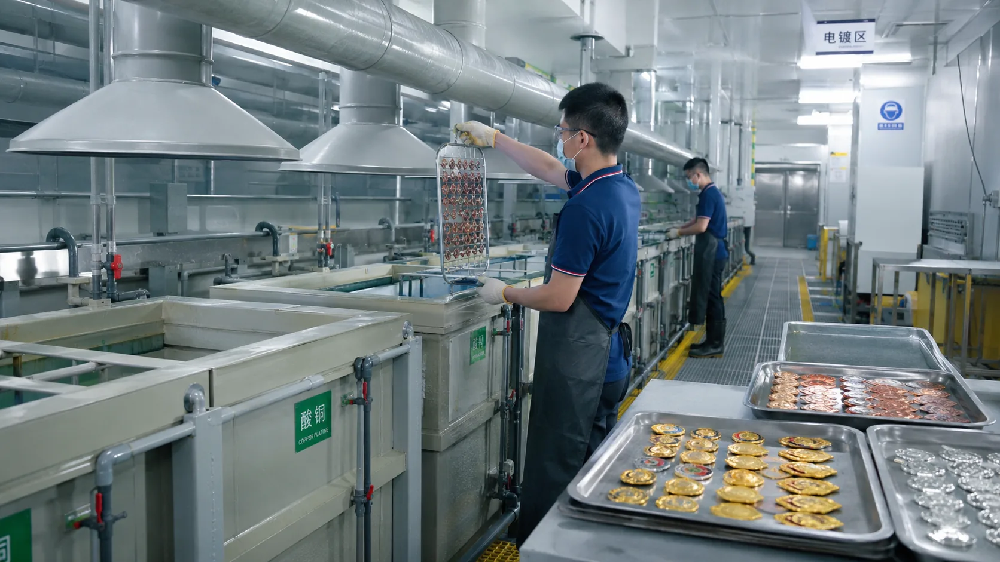
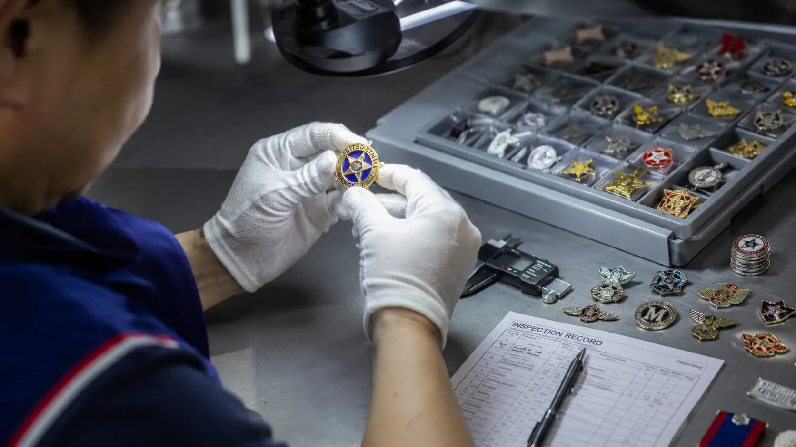

1. Artwork and specification review
The process begins with a PSD, PDF or other available design file. Dimensions, quantity, relief, color, surface treatment, attachment, packing and delivery country are reviewed before tooling. A 40 mm format is a common reference, while thickness is adjusted to product weight and use. Some dimensional cast pieces can use a profile around 5 mm.
2. Mold and sample production
Zinc alloy is a common material for custom shapes, cutouts and dimensional relief. Once the artwork proof is approved, tooling and sample production begin. A sample normally takes about 7 days after all specifications are confirmed.
3. Forming, trimming and polishing
The selected production route creates the metal shape and relief. Edges and surfaces are trimmed and polished before the finish is applied. Tooling depth and polishing level influence how clearly raised and recessed details appear.
4. Surface treatment and decoration
Options include gold-tone plating, silver-tone plating, digital printing, raised metal and recessed metal detail. The sequence depends on the artwork and product type. Color and finish references should be confirmed on the sample before bulk production.
5. Assembly and quality inspection
Attachments are assembled after finishing. Inspection checks dimensions, relief clarity, surface consistency, printed or colored areas, attachment position and the approved packing requirements. Buyers who require compliance review can request the applicable ISO and RoHS documentation before order confirmation.
6. Bulk production and export preparation
The typical starting MOQ is 100 pieces per design, although special processes can change the minimum. Bulk production normally takes about 15 days after sample approval. BadgeCraft Metalworks primarily supports projects for North America, including Canada, and Europe.


Prepare a production-ready inquiry
Send artwork, dimensions, quantity, finish, color, attachment, packing needs and required delivery date. Review pricing factors or request a production review.